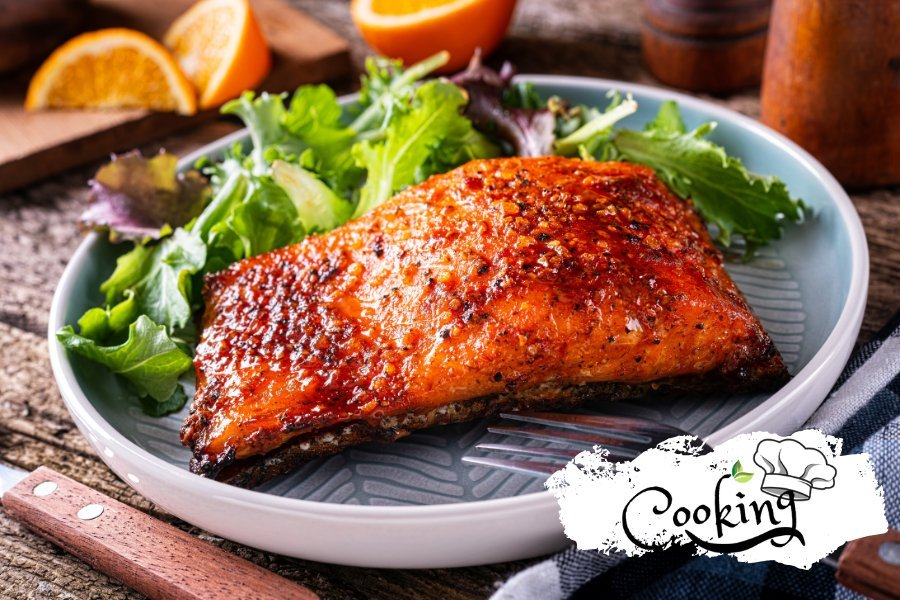

Easy 5 Ingredient Salmon Recipe
Home

Description
Ingredients
- 1 tablespoon garlic powder
- 1 tablespoon dried basil
- 1/2 teaspoon salt
- 4 (6 oz) fillets salmon
- 2 tablespoons butter
- 4 lemon wedges
Directions
- Gather all ingredients.
- Stir garlic powder, basil, and salt together in a small bowl.
- Rub the mixture evenly over salmon.
- Melt butter in a large skillet over medium heat. Add salmon and cook until browned and flaky, about 5 minutes per side.
- Serve salmon with lemon wedges.
Recipe from allrecipes.com